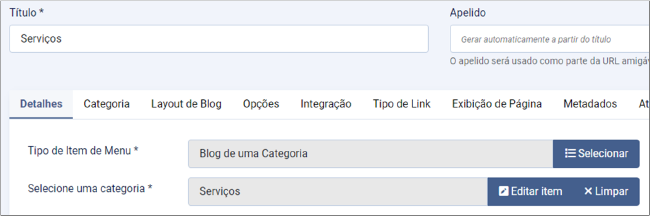
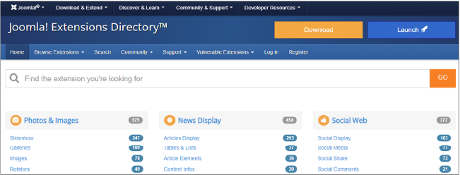
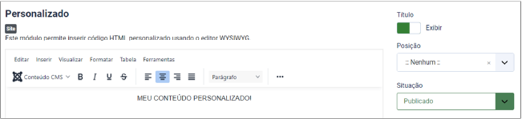

Neste material, você começará entendendo o que é um content management system (sistema de gerenciamento de conteúdo), popularmente chamado pela sigla CMS. Também compreenderá o porquê de utilizar um CMS, quais as vantagens e facilidades que ele traz para o desenvolvimento web e quais os CMSs mais populares atualmente. Além disso, aqui será mostrado todo o processo de instalação, configuração e personalização de um dos mais populares CMSs da atualidade.
O podcast a seguir apresenta uma introdução ao conceito de CMS.
Clique ou toque no botão de play para ouvir o áudio ou no da transcrição para ler o conteúdo.
Um CMS (Content Management System) é um sistema de gerenciamento de conteúdo que permite criar, gerenciar e modificar conteúdos em um site ou sistema sem a necessidade de conhecimento técnico especializado em programação. Basicamente, é uma ferramenta que ajuda você a construir um site sem precisar escrever todo o código do zero.
Vale ressaltar que para um total domínio da ferramenta é necessário ter sólidos conhecimentos em HTML, CSS e JS, isso fará com que você faça praticamente qualquer interface ou lógica frontend com o CMS, e ainda aproveitando todos os recursos pré-prontos que cada CMS oferece.
O CMS torna-se um recurso ágil tanto para desenvolvedores backend que não querem lidar ou não possuem conhecimento em desenvolvimento frontend, quanto para desenvolvedores frontend que não desejam gastar tempo ou recursos com backend. Pois, os principais CMS’s da atualidade, possuem os recursos e uma gama de ferramentas que auxiliam tanto no desenvolvimento backend quanto frontend.
Dentre as vantagens de se usar um CMS’s destacamos:
Facilidade de uso: CMS’s são projetados para serem amigáveis para usuários não técnicos. Eles vêm com uma interface gráfica onde você pode controlar os aspectos do seu site, como adicionar ou editar páginas, alterar o layout e inserir mídia.
Templates e Extensões: Muitos CMS’s oferecem uma variedade de templates (ou temas) que você pode usar para personalizar a aparência do seu site. Além disso, eles geralmente têm plugins ou extensões que adicionam funcionalidades extras ao site ou sistema.
SEO: Muitos CMS’s são otimizados para motores de busca, oferecendo recursos que ajudam seu site a ter um melhor ranking nas pesquisas.
Suporte à Comunidade: Como a maioria dos CMS’s são de código aberto e amplamente utilizados, existe uma grande comunidade de usuários e desenvolvedores que contribuem com suporte, plugins, temas e atualizações.
Usar um CMS pode ser uma maneira eficiente de gerenciar seu conteúdo online e manter seu site atualizado sem precisar de habilidades avançadas em desenvolvimento web. Isso quer dizer que, um dos princípios de todos os CMS’s é de facilitar a criação de conteúdo na web, então todo o CMS possui um painel administrativo, onde usuários que não possuem conhecimento em programação podem inserir com facilidade conteúdos novos.
Mas não confunda facilidade de uso com não usar código, para criar recursos avançados em qualquer CMS, tanto no frontend quanto no backend, é preciso saber programar. Mas como ele possui sempre um painel administrativo para inserir conteúdo, é como criar um site auto gerenciável para o usuário, ou seja, você desenvolvedor irá criar todo o site ou sistema com o CMS, e irá disponibilizar o acesso a áreas para que o usuário tenha permissão de editar ou inserir novos conteúdos. E quando nos referimos a usuário, quer dizer a empresa que lhe contratou para criar o site.
Alguns exemplos de CMSs mais conhecidos incluem WordPress, Joomla! e Drupal, esses três possuem recursos para criar praticamente qualquer site ou sistema web. Porém, existem alguns CMS’s mais específicos como o Magento e Opencart para a criação de e-commerces. E vale mencionar o Moodle que é voltado para área educacional, neste caso é mais comum chamar ele de LMS (Learning Management System).
Todo CMS contém estrutura back-end e front-end e, como ele é voltado para a web, a maioria utiliza a linguagem PHP (hypertext preprocessor, ou “pré-processador de hipertexto”). Então, neste caso, para que se consiga instalar e utilizar um CMS, é preciso ter configurados um servidor web Apache, a biblioteca do PHP e um banco de dados MySQL.
Qualquer empresa de hospedagem de sites já tem por padrão esses requisitos e muitas trazem até mesmo um painel de autoinstalação dos CMSs mais populares.
Este material ensinará você a simular um servidor local usando um software chamado XAMPP.
O XAMPP é um software gratuito que fornece um ambiente de desenvolvimento local de forma prática e com fácil instalação. A sigla XAMPP representa:
X – Cross-platform (multiplataforma, funcionando em Windows, Linux e Mac)
A – Apache (servidor web)
M – MySQL (ou MariaDB, sistema de gerenciamento de banco de dados)
P – PHP (linguagem de programação para desenvolvimento web)
P – Perl (linguagem de programação)
O XAMPP permite aos desenvolvedores criarem e testarem sites ou sistemas web localmente em seu próprio computador, sem a necessidade de um servidor web on-line. Ele cria um ambiente de testes controlado, no qual você pode experimentar diferentes configurações e plugins (ou plug-ins) antes de implementar em um servidor on-line.
Ele facilita a configuração e integração de serviços essenciais para o desenvolvimento web, como o servidor Apache, banco de dados MySQL/MariaDB e interpretadores de PHP.
O XAMPP é amplamente utilizado por estudantes e iniciantes para aprender e praticar o desenvolvimento web devido à sua simplicidade e conveniência. Ele permite criar protótipos de aplicações web rapidamente, sem a necessidade de configuração complexa de servidores.
Conforme mencionado anteriormente, o XAMPP traz um pacote de recursos essenciais ao desenvolvimento web. Confira:
Um dos servidores web mais populares, que serve como base para hospedar sites ou sistemas web.
Sistemas de gerenciamento de banco de dados relacionais usados para armazenar e gerenciar dados.
Linguagem de programação amplamente usada para o desenvolvimento de aplicações web dinâmicas.
Uma ferramenta para gerenciamento de bancos de dados MySQL/MariaDB.
Para instalar o XAMPP é bem simples. No site oficial, baixe-o e o instale em seu computador normalmente, como qualquer outro software:
Site oficial do XAMPP
Fonte: Apache Friends (c2024)
Captura de tela do site oficial do XAMPP, na qual há opções para download para Windows, Linux e Mac OS.
Agora, basta fazer download para o seu sistema operacional e seguir os passos da instalação.
Após a instalação do XAMPP, você deve ter reparado que ele cria um diretório na raiz do HD de seu computador e, ao acessar esse diretório, haverá diversas pastas e arquivos.
É preciso ativar os componentes do XAMPP sempre que precisar utilizá-los. Para isso, acesse a pasta raiz do XAMPP e encontre o arquivo xampp-control.exe. Ao clicar nele, abrirá uma janela em seu sistema operacional mostrando os componentes a serem ativados. Veja a figura:
Componentes do XAMPP
Fonte: Senac EAD (2024)
Painel com a lista de componentes do XAMPP e, ao lado de cada serviço, um botão para ativá-lo.
Ao abrir o painel, conforme a figura, clique em start nos componentes Apache e MySQL. Se os dois ficarem na cor verde, quer dizer que eles estão rodando em segundo plano em seu computador. Após isso, feche o painel do XAMPP.
Após esse processo, seu ambiente está pronto para criar qualquer sistema web com PHP e até mesmo instalar um CMS. É preciso repetir todo o processo sempre que reiniciar seu computador ou sempre que, por algum motivo, o servidor parar de rodar.
Você deve ter percebido que o XAMPP é uma ferramenta poderosa para os desenvolvedores web, que permite criar, testar e implementar projetos de maneira eficiente e controlada. Isso porque ele oferece um ambiente robusto e flexível, indispensável para a instalação local de qualquer CMS ou sistema baseado em PHP.
Nas próximas seções, você aprenderá a instalar e configurar um dos CMSs mais populares do mundo, chamado Joomla!. Aprenderá também a desenvolver com ele.
O Joomla! é um dos mais populares sistemas de gerenciamento de conteúdo (CMSs) de código aberto, usado para criar, gerenciar e publicar conteúdo na web. Ele é construído sobre uma estrutura (framework) que permite o desenvolvimento de sites e aplicações web robustos e extensíveis.
É usado para criar, organizar, gerenciar e publicar conteúdo para empresas de todos os portes, governos, organizações sem fins lucrativos e grandes organizações em todo o mundo. O Joomla! é apoiado por um grande ecossistema e atualmente contém:
Como já mencionado, o Joomla! tem uma base de código sólida e uma grande comunidade global. Com ele, é possível construir sites ou desenvolver aplicativos e desenvolver templates ou extensões ou algo completamente novo baseado em seu framework, o que o torna uma ferramenta extremamente extensível e versátil, fazendo com que as possibilidades de desenvolvimento sejam quase infinitas.
Apesar de o WordPress ter se tornado muito popular no Brasil nos últimos anos, essa popularidade vem principalmente por ele ser uma ferramenta mais intuitiva para usuários que não têm nenhum conhecimento em desenvolvimento web, porém dos CMSs mais utilizados, o Joomla! é o que tem mais recursos em seu núcleo-padrão, ou seja, ele já vem com muitos recursos nativos, não precisando instalar extensões externas para muitas funcionalidades.
A interface do Joomla! é intuitiva e ele é um dos únicos CMSs que permite de forma nativa criar, editar e mudar o template não só da parte da frente do site, mas da interface administrativa também. Isso quer dizer que, com ele, você pode criar um template totalmente novo e alinhado às suas necessidades para a parte administrativa do seu site ou sistema.
No decorrer deste conteúdo, você aprenderá a instalar, configurar e entender os principais recursos do Joomla!.
Este conteúdo demonstrará a instalação do Joomla!, mas os passos para a instalação são muito semelhantes para outros CMSs também.
Nesse processo, será exemplificada a instalação localmente utilizando o XAMPP, mas, como já mencionado, para instalar em qualquer empresa de hospedagem, o passo a passo será praticamente o mesmo.
Primeiramente, é necessário fazer download do CMS e, para isso, é preciso acessar o site oficial do Joomla! e clicar em Download:
Download Joomla!
Fonte: Joomla! (c2024)
Captura de tela do site oficial do Joomla!, em que há um link para download.
Ao clicar em download na página inicial do site, você será direcionado para outra página, na qual deve clicar no botão Download Joomla!, o que fará baixar a versão estável mais atual do CMS.
Você perceberá que o arquivo baixado está no formato “.zip”, então será necessário extrair esse arquivo. Porém, se você está usando o XAMPP, é preciso extraí-lo em uma pasta específica.
Primeiro, garanta que o XAMPP está instalado e rodando os componentes Apache e MySQL. Para isso, acesse o diretório XAMPP e abra o arquivo xampp-control.exe; veja se os dois componentes citados estão ligados. Após isso, feche a janela do XAMPP e o seu servidor Apache ficará rodando em segundo plano no seu computador.
Agora, ainda dentro do diretório XAMPP, acesse a pasta chamada htdocs. Dentro desta pasta haverá alguns arquivos iniciais da interface do XAMPP. Se você abrir o seu navegador e digitar http://localhost/, a página inicial do XAMPP abrirá, então esse caminho no URL é a base, ou seja, a raiz do seu servidor local. Veja a figura:
Localhost XAMPP
Fonte: Senac EAD (2024)
Captura de tela com a interface inicial do front-end de um servidor local, aberto em qualquer navegador.
Para instalar qualquer CMS baseado em PHP, será necessário ter criado um banco de dados e um usuário com permissão de acesso a esse banco. Quando você está realizando essa instalação em um servidor on-line, a própria empresa de hospedagem fornece um painel para criar esse banco e usuário.
Já no XAMPP, o processo é todo no phpMyAdmin, que nada mais é do que um sistema operacional com uma interface simples para gerenciar seus bancos de dados. Para acessar o phpMyAdmin, digite no URL do seu navegador o endereço http://localhost/phpmyadmin/, abrindo assim seu painel.
Painel phpMyAdmin
Fonte: Senac EAD (2024)
Captura de tela com a interface inicial do sistema gerenciador de banco de dados.
O primeiro passo é criar um banco de dados. Na lateral esquerda do phpMyAdmin, clique no botão Novo e, na tela que se abrirá, insira um nome para o seu banco. Esse nome não pode conter espaços vazios nem caracteres especiais.
Neste exemplo, o banco será nomeado como novo_joomla. Clique em Criar, conforme a figura:
Criando um banco de dados
Fonte: Senac EAD (2024)
Captura de tela com a interface inicial do sistema gerenciador de banco de dados, na tela na qual se coloca o nome de um novo banco.
Após criar o banco de dados, será necessário criar um usuário que terá acesso a esse banco. Por razões de segurança, o Joomla! somente permite usuários com senhas que contenham mais de 11 caracteres, então, ao criar a senha do usuário do banco, é preciso criar uma senha com 12 caracteres ou mais, senão, ocorrerá erro na hora de instalar o Joomla!.
Para criar um usuário no phpMyAdmin, volte à página inicial do painel (clicando no botão com ícone de uma casa) e acesse o menu no topo chamado Contas de usuário e clique em Adicionar conta de usuário.
Criando um usuário para o banco de dados
Fonte: Senac EAD (2024)
Captura de tela com a interface inicial do sistema gerenciador de banco de dados, na tela em que se cria um novo usuário.
Na tela seguinte, crie um nome de usuário e senha. Lembre-se de que a senha precisa ter doze caracteres ou mais e, no final da página, é preciso marcar todos os privilégios de acesso a esse usuário. Confira na figura:
Permissões de usuário
Fonte: Senac EAD (2024)
Captura de tela com todas as opções de permissões marcadas para o usuário a ser criado.
Feito isso, clique no botão executar, localizado no final da tela.
Agora, confira a instalação do Joomla!. Dentro da pasta htdocs do XAMPP, crie uma nova pasta, que servirá como diretório principal do seu projeto Joomla. Para esse exemplo, a pasta criada será a joomla.
Então, extraia o arquivo que você baixou do site Joomla! para o diretório xampp > htdocs > joomla. Após a extração, ficarão todos os arquivos e diretórios do CMS. Se você usar um software estilo WinRAR, basta mover o arquivo na pasta mencionada, clicar com o botão direito do mouse sobre o arquivo e clicar em Extrair aqui.
Diretórios Joomla
Fonte: Senac EAD (2024)
Captura de tela mostrando todos os arquivos da estrutura do Joomla!.
Repare que, após a extração, o arquivo ZIP original não é excluído, então você pode deletá-lo manualmente.
Agora será acessado o URL desse diretório, que fica em http://localhost/ mais o nome do diretório. Neste caso, o diretório foi criado dentro de htdocs com o nome joomla, e nele foi extraído o CMS, então o caminho final no navegador fica http://localhost/joomla. Quando esse URL for acessado, a tela de instalação do Joomla! abrirá.
Instalação do Joomla!
Fonte: Senac EAD (2024)
Captura de tela mostrando a tela para o início da instalação do Joomla!.
Agora, basta seguir o passo a passo da instalação guiada, o próprio Joomla! vai informando os elementos a serem preenchidos. Na próxima etapa, será necessário criar um usuário que terá acesso à administração total do Joomla!. Não confunda esse usuário com o usuário do banco, são elementos totalmente diferentes.
Na terceira etapa da instalação, serão solicitadas as informações do banco de dados, que são aquelas criadas no phpMyAdmin. Veja a figura:
Instalação do Joomla! – Etapa BD
Fonte: Senac EAD (2024)
Captura da tela para inserir as informações do banco de dados na instalação do Joomla!.
Após alguns minutos estará concluída a instalação do seu CMS. Porém, é importante deletar a pasta de instalação do Joomla! após concluir seu processo de instalação. Em muitos casos, isso ocorre automaticamente, mas, quando se está trabalhando localmente, é comum ele não conseguir excluir tal diretório.
Para excluir de forma manual, basta acessar a pasta raiz do seu projeto e deletar a pasta installation.
Deletar diretório de instalação
Fonte: Senac EAD (2024)
Captura de tela mostrando os diretórios do seu projeto no Joomla! com a pasta “installation” selecionada.
Agora seu CMS está instalado e pronto para ser utilizado. Repare que, ao acessar o endereço raiz do seu projeto (http://localhost/joomla/), será mostrada a interface inicial do seu site.
O Joomla!, assim como a maioria dos CMSs, é dividido em duas partes: a frente do site, que é a interface visualizada pelo usuário final, e a parte administrativa do site, que só o desenvolvedor e usuários com permissão podem acessar.
Para acessar a parte administrativa do seu CMS Joomla, acrescente o caminho administrator ao final do seu URL. No exemplo http://localhost/joomla/administrator/, uma tela abrirá solicitando o login e a senha do usuário criado no momento da instalação do CMS. Ao inserir seu login e sua senha, você terá acesso à administração do seu site.
Painel administrativo
Fonte: Senac EAD (2024)
Captura da tela inicial do painel administrativo do CMS Joomla.
À primeira vista, pode ser que o painel do Joomla! não pareça tão intuitivo, mas rapidamente você perceberá como é fácil navegar em sua interface.
O primeiro passo será, dentro do painel administrativo, instalar a linguagem em português, o que facilitará o entendimento dos comandos do seu painel. Para isso, clique no menu lateral chamado System, na tela que se abrirá e, no bloco Manage, clique em Languages.
Idioma Joomla
Fonte: Senac EAD (2024)
Captura de tela mostrando um bloco com a opção de Languages.
A tela que se abrirá mostrará os idiomas já instalados no seu painel e, logo acima da tela, haverá um botão escrito Install languages. Clicar neste botão abrirá uma tela com todos os idiomas disponíveis para o seu painel Joomla; pesquise por português para filtrar os idiomas, então clique no botão Install ao lado do idioma.
Instalando um novo idioma
Fonte: Senac EAD (2024)
Captura de tela mostrando a opção de instalação do idioma “portuguese, Brazil”.
Depois de concluída a instalação, é preciso alterar o idioma tanto do seu painel administrativo quanto do site. Para isso, nessa mesma tela, clique em Manage > Languages.
Na tela que se abrirá, marque como padrão o idioma português – deve ficar com o ícone de uma estrela ao lado dele. Na parte de cima dessa tela há uma caixa de seleção com duas opções: Site e Administrador, então é preciso fazer esse processo tanto para o filtro Site quanto para Administrador. Fazendo isso, seu site já deve ficar em português.
Perceba que tanto a frente do site quanto o painel administrativo são totalmente responsivos e seus templates são baseados no framework Bootstrap.
Painel administrativo em português
Fonte: Senac EAD (2024)
Captura de tela mostrando o painel administrativo do Joomla! com os textos em português.
O próximo passo é conhecer as configurações globais do Joomla!. Nelas, certamente haverá algumas opções importantes na definição do seu projeto. Para acessar essa área, dentro do painel administrativo, clique no menu lateral Sistema e depois acesse a opção Configurações Globais.
Ao acessar as configurações globais, você verá uma tela cheia de opções e abas. Neste momento serão consideradas as opções mais importantes. Na aba Site, em Site Name, ficará o nome do seu projeto/site e, mais abaixo, tem a opção de Site Meta Description. Essas opções são importantes para o SEO do seu site, pois, ao preenchê-las, elas ocupam as informações das tags TITLE e META description do seu site, isso sempre que você não definir essas informações diretamente em cada menu ou página.
Ainda na mesma aba, mais abaixo haverá opções diretamente ligadas ao SEO, e, na opção Site Name in Page Titles, você define se o nome do seu site deve aparecer no TITLE de todas as páginas, antes ou depois do texto TITLE exclusivo de cada página. Porém, a opção mais importante que tem a ver com SEO é a Use URL Rewriting, porque é essa opção que fará funcionar os URLs amigáveis no Joomla!. Ao marcar essa opção, você perceberá que o próprio sistema pedirá para você renomear o arquivo que vem no Joomla! chamado htaccess.txt para .htaccess.
Então, você deve manualmente encontrar esse arquivo na pasta raiz da instalação do Joomla! e renomeá-lo.
Renomeando htaccess
Fonte: Senac EAD (2024)
Captura de tela mostrando os arquivos e diretórios do Joomla! com o arquivo htaccess.txt renomeado para .htaccess. .
Após esse processo, não se esqueça de clicar no botão Salvar no painel do Joomla!.
Com o Joomla!, é possível criar, editar e gerenciar novos usuários com acesso ao painel administrativo do site. Também é possível gerenciar as permissões desses usuários, restringindo suas ações, como, por exemplo, não dando permissão para deletar artigos, restringindo acesso a determinados módulos ou menus do painel administrativo, e até mesmo gerenciar usuários que têm acesso ao login na frente do site Joomla!, mas que não têm acesso ao painel administrativo dele.
Para acessar o gerenciador de usuários, acesse o menu lateral Usuários e depois clique em Gerenciar. Na tela que se abrirá ficará a lista de usuários cadastrados no CMS e provavelmente só terá o seu usuário na lista. Você pode, então, clicar no nome e mudar as informações como nome de usuário e senha.
Para criar um novo usuário, clique em Novo, botão localizado na parte superior da tela. Então será necessário inserir algumas opções obrigatórias, como “nome”, que se refere ao nome verdadeiro do usuário; já o campo Nome de usuário é o nome que será usado como login para acessar o site; também será necessário determinar um e-mail e uma senha.
Nessa mesma tela, é na aba Grupos de usuários que você define à qual grupo esse usuário pertencerá, determinando assim os acessos e as permissões que esse usuário terá em seu sistema.
Grupos de usuários
Fonte: Senac EAD (2024)
Captura de tela mostrando os grupos de usuários do Joomla!.
No Joomla!, os grupos de usuários são fundamentais para definir quem pode fazer o que no site. Cada grupo de usuários tem um conjunto de permissões que controlam o acesso a diferentes funcionalidades e áreas do site.
Este é o grupo-padrão para todos os visitantes do site que não estão logados, eles podem ver apenas o conteúdo público do site, sem acesso a conteúdo ou funcionalidades restritas.
Este grupo é para usuários que não estão logados, similar ao grupo Public. Ele pode ser usado para exibir conteúdo específico para visitantes não registrados, o quais podem ver conteúdo marcado especificamente para Guest. Este grupo é útil para personalizar a experiência de visitantes não logados.
É para usuários logados que têm uma conta no site e podem, assim, acessar conteúdo restrito ao grupo Registered. Esses usuários não têm permissões administrativas nem acesso ao painel administrativo do site.
Grupo para usuários que podem criar e enviar novos conteúdos. Esses usuários podem criar novos artigos e enviá-los para revisão, mas não podem publicar artigos.
Grupo para usuários que podem editar qualquer conteúdo. Eles podem criar, editar e alterar o conteúdo de qualquer artigo, inclusive os enviados por outros autores, mas não podem publicar artigos.
Usuários que podem publicar e gerenciar conteúdos. Eles podem criar, editar e publicar qualquer conteúdo e também podem alterar o status de publicação dos artigos.
Usuários com permissões administrativas limitadas. Podem acessar a área administrativa do site, gerenciar conteúdos, categorias e menus, mas não têm acesso a configurações do sistema ou gestão de usuários.
Usuários com permissões administrativas avançadas. Podem acessar a maioria das áreas administrativas, gerenciar usuários, instalar extensões e templates e alterar configurações globais do site, mas não têm acesso ao gerenciamento total do site, algumas configurações críticas são restritas.
O grupo mais poderoso, que tem permissões totais. Esses usuários têm acesso completo a todas as funcionalidades administrativas do Joomla!. Podem gerenciar todos os aspectos do site, incluindo configurações do sistema, usuários, extensões, conteúdos e templates. Este grupo é geralmente reservado para os desenvolvedores do site.
Após determinar o grupo de usuário do novo usuário, basta clicar em Salvar e Fechar.
Os grupos de usuários do Joomla! permitem uma gestão detalhada e eficiente de permissões e acessos no site, garantindo que cada usuário tenha apenas as permissões necessárias para suas funções. Isso facilita a administração de sites complexos e ajuda a manter a segurança e a organização do conteúdo e das funcionalidades.
No menu lateral do Joomla! você encontrará a opção Conteúdo e entre as opções terá Artigos, Categorias, Artigos em destaque e Módulos. Os artigos são a unidade básica de conteúdo no Joomla! e são utilizados para criar e organizar o conteúdo principal de um site, como textos, imagens, vídeos e outros tipos de mídia.
É possível entender os artigos como páginas do seu site, ou seja, é o conteúdo HTML principal de cada página, Já os módulos são os elementos HTML que podem estar inseridos em diversas ou determinadas páginas.
Para adicionar um novo artigo, acesse o menu Artigo e clique em Novo, o que fará abrir a tela de criação/edição de artigo.
O Joomla!, diferentemente da maioria dos CMSs, contém uma gama de opções extensa em cada tela e isso faz com que, em alguns casos, usuários novos tenham dificuldade de entender esse CMS. Contudo, seu excesso de opções não é um problema, ele é assim devido à sua natureza, pois nasceu para auxiliar a criação de grandes portais de notícias, ou seja, ele já tem ferramentas para auxiliar na construção de projetos complexos, mas também é ideal para projetos menores, pois a maioria das opções que aparecem na tela não precisam ser modificadas, sendo apenas elementos opcionais para situações específicas.
Tela de edição de artigo
Fonte: Senac EAD (2024)
Captura de tela mostrando a tela de edição de artigos, na qual há um campo para colocar o título do artigo, outro campo maior com editor de texto para inserir todo o conteúdo da página e opções para publicar, categorizar e destacar o artigo.
Repare na figura anterior que as opções principais são intuitivas, obviamente é obrigatório colocar um título para seu artigo, à qual categoria ele pertencerá e se será um artigo em destaque ou não.
O campo denominado de Conteúdo do Artigo traz um editor WYSIWYG (acrônimo para what you see is what you get ou “o que você vê é o formato final”) personalizado e muito intuitivo. Esse editor permite aos usuários criarem o conteúdo HTML da página mesmo sem conhecimento em códigos.
Dentro do editor de conteúdo ficam alguns botões adicionados via plugins do Joomla! e neles estão os atalhos para a inserção de elementos dos principais componentes desse CMS, como Imagens, Contatos, Menus, Módulos, entre outros.
Plugins de Conteúdo do Artigo
Fonte: Senac EAD (2024)
Captura da tela de edição de artigos, na qual há um botão para adicionar imagens e outros elementos de componentes do Joomla!.
Quando se clica para adicionar uma imagem, abre-se o painel de Mídias do Joomla!. Neste painel, é possível fazer o upload de imagens e arquivos de mídia, como PDF, deletar e até mesmo organizar seus arquivos com a criação de pastas.
O Joomla! já vem com algumas imagens de exemplo, mas, para inserir qualquer imagem em seu artigo, basta selecioná-la no painel de mídia e clicar no botão de Inserir.
Painel de Mídias Joomla!
Fonte: Senac EAD (2024)
Captura de tela mostrando o painel de Mídias do Joomla!, com opções de inserir, deletar e criar novas pastas para organizar as imagens.
Ainda na tela de edição de artigos, na aba Imagens e Links, é possível adicionar uma imagem que aparecerá na introdução do artigo, ou seja, em algum menu que mostra a lista de artigos e não o artigo em si. Além disso, na mesma aba está, logo abaixo, um campo chamado Imagem do Artigo, e esta opção sim insere a imagem dentro do conteúdo do seu artigo, no entanto você dificilmente inserirá uma imagem por esse campo, pois é mais fácil inserir a imagem dentro do conteúdo, conforme mostrado na figura anterior, além de ter a possibilidade de posicionar a imagem onde for necessária em sua página.
Painel de Mídias Joomla!
Fonte: Senac EAD (2024)
Captura da tela de edição de artigos do Joomla! na aba de Imagens e Links, na qual há campos para inserir uma imagem de introdução e imagem do Artigo.
Após concluir as edições do seu artigo, clique em Salvar e fechar. Você será redirecionado para a página de artigos e lá mostrará seus artigos criados.
O Joomla! permite criar e editar categorias para vincular aos seus artigos. O gerenciamento dessas categorias é bem simples e intuitivo: acesse o menu lateral Categorias e você perceberá que a tela é muito similar à dos artigos. Basta clicar em Novo e criar novas categorias.
Categorias Joomla!
Fonte: Senac EAD (2024)
Captura da tela de edição de categorias do Joomla!.
O único campo obrigatório ao criar uma nova categoria é o Título, e provavelmente é a única opção que você precisará adicionar, visto que os conteúdos vão nos artigos.
Por padrão, o Joomla! vem com uma categoria chamada Uncategorised, que, traduzindo, seria “sem categoria”. Nunca delete essa categoria, pois é preciso ter ao menos uma delas para vincular aos artigos. O ideal, porém, é editar essa categoria-padrão mudando seu nome para, por exemplo, categoria Geral ou Páginas.
Para editar qualquer categoria, basta clicar no nome dela e mudar a informação que precisar. Neste exemplo, o nome da categoria Uncategorised foi alterado para Páginas.
Gerenciador de categorias Joomla!
Fonte: Senac EAD (2024)
Captura da tela de gerenciamento de categorias do Joomla! com a lista de categorias criadas e ou editadas.
Como você já deve ter notado, os artigos no Joomla! são uma forma poderosa e flexível de criar e gerenciar conteúdo no seu site. Com funcionalidades robustas para organização, formatação e controle de acesso, você pode facilmente manter o conteúdo atualizado e bem estruturado, atendendo às necessidades de um site dinâmico e informativo.
Os menus no Joomla! são uma parte crucial da navegação e organização do site ou sistema. Eles permitem que você crie links para artigos, categorias, componentes e outras funcionalidades do CMS.
Porém, é preciso entender a nomenclatura do Joomla!, pois ele nomeia de Menus as coleções de itens de menu. Cada menu pode ter vários itens de menu que apontam para diferentes partes do site. Já os Itens de Menu são os links individuais dentro de um menu que apontam para um conteúdo específico, como um artigo, uma categoria, um componente etc. Então, o menu é basicamente um agrupamento de links e os itens de menu são os links em si.
Na lateral da sua área administrativa, haverá a opção Menus. Quando se clica nesse botão, abrem-se opções para gerenciar os menus, mas também são mostrados os menus já criados. Provavelmente haverá um menu que vem por padrão chamado Main Menu, que já foi criado como exemplo, então é possível editá-lo criando outro a partir dele.
Acessar o menu mostrará a lista de itens de menu que o compõe e provavelmente haverá apenas um item de menu chamado Home. É possível editá-lo criando outro a partir dele ou criando um novo no botão Novo.
Clicar em Novo abrirá a tela de criação/edição de itens de menu. Veja a figura:
Itens de menu
Fonte: Senac EAD (2024)
Captura da tela de edição e criação dos itens de menu. Suas opções são similares às da página de edição de artigos.
Como é de praxe no Joomla!, haverá muitos campos e opções. Nessa tela, é necessário ficar atento ao campo Título do seu item de menu, pois ele define o texto que ficará no link desse menu, e à opção Tipo de Item de Menu, porque ela define o conteúdo que será mostrado na página.
Assim, clicar em Tipo de Item abre a tela com todas as opções de conteúdos disponíveis a serem exibidas na página. Analise a figura:
Tipos de itens de menu
Fonte: Senac EAD (2024)
Captura da tela com todas as categorias de tipos de itens de menu disponíveis no Joomla!.
A maioria dos componentes do Joomla! disponibilizam tipos de itens de menu específicos para seus conteúdos. Clicar no item de menu Artigos abrirá a lista de opções de conteúdos que podem ser inseridos neste item de menu, como, por exemplo, um artigo específico para ser apresentado na página, uma lista estilo blog, com determinadas categorias de artigo, e até mesmo artigos em destaque.
Para exemplificar, acompanhe que, clicando em Artigo Específico, surgirá um novo campo solicitando que você selecione o artigo que deseja mostrar ou crie um novo. Nesse exemplo, foi selecionado o artigo de exemplo criado anteriormente e, como título do menu, inseriu-se o termo Quem Somos.
Tipo de itens de menu – Artigo
Fonte: Senac EAD (2024)
Captura da tela de edição de itens de menu, com a opção Artigo Específico selecionada.
Depois disso, clique no botão Salvar e Fechar e você será redirecionado à tela que mostra a lista de itens de menu.
Ao acessar agora a frente do site, ou seja, seu site sem o “administrator”, o menu que vem publicado de exemplo deve conter seu novo item criado.
Tipo de itens de menu – Artigo
Fonte: Senac EAD (2024)
Captura de tela que mostra a frente do site. Onde tem o módulo de menu, agora consta o link criado no administrador do site.
Clicando então no menu Empresa, uma nova página deve abrir no site com o conteúdo criado no artigo.
Página com artigo
Fonte: Senac EAD (2024)
A figura mostra a frente do site, na página que contém o conteúdo do artigo criado.
Repare na figura anterior que o artigo vem com vários elementos que se aplicam mais a blogs ou sites de notícias, como nome do autor, a data de publicação e o número de acessos. Talvez essas informações não façam sentido para o seu projeto e você deseje removê-las.
A tela de edição do item de menu e do artigo contém as opções para remover essas informações, mas, para retirá-las por padrão de todos os artigos, acesse novamente a administração do seu site e vá até o menu lateral em Conteúdos > Artigos.
Na lista de artigos, bem acima da tela, há um botão escrito Opções. Clicar nele abrirá as opções do componente de artigos. Nesta tela, terá as opções para desmarcar as visualizações desses elementos.
Agora, voltando à edição do artigo criado como exemplo, as informações contidas nele serão alteradas, de acordo com a primeira figura a seguir. Ao voltar à frente do site e acessar o link de Empresa, o conteúdo terá sido editado, conforme as atualizações do artigo, o que você verá na segunda figura:
Página atualizada no Joomla!
Fonte: Senac EAD (2024)
Captura da tela de edição de artigos.
Página atualizada no Joomla!
Fonte: Senac EAD (2024)
Captura de tela mostrando a frente do site, com as atualizações realizadas no artigo.
Agora serão criados mais três artigos de exemplo, mas, para esses novos artigos, será selecionada a categoria Serviços, criada anteriormente. Além disso, na aba Imagens e Links será adicionada uma imagem de exemplo para cada artigo.
Lista de artigos
Fonte: Senac EAD (2024)
Captura de tela mostrando a página com a lista de artigos criados.
Após a criação dos artigos, é preciso voltar aos menus e criar um novo item de menu. Ele será chamado de Serviços e, no tipo de item, será selecionado Artigos > Blog de uma Categoria. Depois, será selecionada a categoria Serviços.
Novo item de menu
Fonte: Senac EAD (2024)
Captura da tela de criação de itens de menu com a opção “Blog de uma Categoria” selecionada.
Repare na figura anterior que selecionar o tipo de item Blog abre algumas novas abas na tela e, ao clicar em Layout de Blog, haverá campos para que consiga controlar o layout da visualização desta categoria.
As opções foram alteradas conforme a figura:
Categoria de blog
Fonte: Senac EAD (2024)
Captura de tela mostrando as configurações de layout da categoria estilo Blog.
Acessando agora a frente do site observa-se que haverá um novo item de menu (Serviços) e clicar abrirá a lista de artigos da categoria serviços, conforme o layout selecionado.
Categoria estilo blog
Fonte: Senac EAD (2024)
Captura de tela mostrando a frente do site com as configurações de layout da categoria estilo Blog.
Com o Joomla!, não é preciso criar um item de menu para cada artigo, pois, no caso em que eles aparecem em uma categoria de blog, ao clicar no título do artigo, ele automaticamente abre em nova página.
Perceba que os menus no Joomla! são ferramentas poderosas para organizar o conteúdo do seu site e navegar por ele. Com a capacidade de criar menus e itens de menu personalizados, você pode estruturar a navegação do site de acordo com suas necessidades específicas. A flexibilidade na configuração de tipos de itens de menu, parâmetros de exibição e permissões de acesso permite uma personalização detalhada, garantindo que os usuários tenham uma experiência de navegação intuitiva e eficiente.
A maioria dos CMSs possibilita a instalação de extensões, que nada mais são do que trechos de códigos de terceiros que se integram ao sistema. Essas extensões podem ter inúmeras funcionalidades e objetivos, sendo desde um banner estilo slideshow, formulários complexos até mesmo funcionalidades de e-commerce.
Muitos CMSs chamam essas extensões de plugins, ou seja, usam o termo plugin como sinônimo de extensão. O WordPress é um exemplo disso, pois todas as extensões dele são chamadas de plugins. O Joomla!, porém, tem uma arquitetura bem definida que separa essas extensões em três categorias: componentes, módulos e plugins.
Para o Joomla!, um plugin é um tipo de extensão que adiciona funcionalidades extras ao sistema. Esses plugins estão associados a gatilhos e podem ser executados quando eventos específicos ocorrem. O Joomla! oferece uma variedade de eventos de plugin, mas qualquer extensão pode disparar eventos personalizados. Quando um evento específico acontece, todas as funções do plugin associado a esse evento são executadas em sequência.
Já os módulos no Joomla! são blocos de conteúdo ou funcionalidades que podem ser exibidos em várias posições predefinidas de um template de site. Eles são usados para adicionar diversos elementos, como menus, formulários de login, banners e muito mais, em diferentes áreas do site.
Os módulos que vêm como padrão no Joomla! são:
O Joomla!, assim como outros CMSs, permite a inserção de extensões externas, então existe uma infinidade de módulos, com funcionalidades diversas, que podem ser instalados nele.
Contudo, para instalar novos módulos ou qualquer outro tipo de extensão no Joomla!, sempre verifique seu site oficial e, no menu Download e Extend, clique em Extensions. Este link abre todas as extensões que são válidas pelo projeto Joomla!.
Joomla! Extensions Directory
Fonte: Joomla! (c2024)
Captura de tela mostrando o site de extensões oficial do Joomla!. Uma lista categorizada com diversas extensões para download.
Por outro lado, para gerenciar os módulos que já estão instalados em seu CMS, basta acessar o menu Conteúdos > Módulos do Site e lá abrirá a lista de módulos instalados e publicados no site, os quais são, por padrão três, conforme a figura:
Gerenciador de módulos
Fonte: Senac EAD (2024)
Captura de tela mostrando a lista de módulos publicados.
Clicar no título de cada módulo abrirá a sua tela de edição.
Agora, acompanhe o que ocorre quando se clica no módulo de Login. Vale ressaltar que, ao abrir a edição do módulo, cada módulo mostrará opções muito diferentes, pois devem corresponder às especificidades de cada funcionalidade dele. Haverá, no entanto, algumas configurações comuns a todos os módulos, como o Título, por exemplo, se este deve aparecer na frente do site ou não, a posição deste módulo no layout do seu site, a situação do módulo, ou seja, se ele estará publicado no site ou não.
Sempre haverá também, na aba Atribuir Menu, a opção de mostrar o módulo em todas as páginas ou em páginas especificadas.
Edição de módulos
Fonte: Senac EAD (2024)
Captura da tela de edição do módulo de login.
Neste caso, o título do módulo foi alterado e foi selecionada a opção para que o módulo aparecesse apenas no item de menu Home. Veja nesta figura o resultado dessas modificações na frente do site:
Módulos na frente do site
Fonte: Senac EAD (2024)
Captura de tela da página Home no site. Com a modificação no título e na página Empresa, o módulo não aparece.
Agora será criado um novo módulo. Para isso, é preciso acessar novamente o menu Conteúdos > Módulos do Site e clicar em Novo. A lista de módulos que já estão instalados no Joomla! abrirá. Veja a figura:
Lista de módulos
Fonte: Senac EAD (2024)
Captura de tela mostrando a página com todos os módulos instalados no Joomla!.
Este novo módulo será chamado de Personalizado e basicamente abre espaço para que se criem conteúdos HTML livremente nele.
Ao acessar o módulo, é preciso indicar a posição dele, ou seja, onde ele aparecerá no layout do seu site.
Edição de módulo personalizado
Fonte: Senac EAD (2024)
Captura da tela de edição do módulo personalizado com um campo para inserir HTML, semelhante à tela de edição de artigos.
Cada template do Joomla! contém várias posições predefinidas nas quais os módulos podem ser colocados e você pode ver as posições disponíveis ativando a visualização de posições de módulos. Para fazer isso, vá para Sistema > Temas de Site > Opções e habilite a Visualização de Posições de Módulos.
Depois, visite seu site e adicione ?tp=1 ao URL (por exemplo, http://localhost/joomla/?tp=1).
Visualização das posições
Fonte: Senac EAD (2024)
Captura de tela mostrando a frente do site com o “/?tp=1” inserido no final do URL, o que faz mostrar todas as posições disponíveis do template e onde fica cada posição.
Esse recurso fantástico faz você saber qual é e onde fica localizada cada posição em relação ao seu template. Agora, basta escolher a posição na edição do módulo e publicá-lo.
Os módulos no Joomla! são ferramentas poderosas para adicionar funcionalidades e conteúdo dinâmico ao seu site. Eles oferecem uma maneira flexível e eficiente de personalizar a aparência e a funcionalidade do seu site sem a necessidade de editar diretamente o código do template. Com a capacidade de controlar onde e como os módulos são exibidos, você pode criar uma experiência de usuário altamente personalizada e eficiente.
O CMS Joomla! tem um processo muito bem estruturado para lidar com os templates, basicamente é o template que define toda a parte visual do site.
Com o Joomla!, é possível ter diversos temas instalados e utilizados em diferentes páginas do seu site. Também é possível mudar ou estilizar o tema presente na administração do site. Para gerenciar esses temas, você pode clicar no menu lateral em Sistema e, ao abrirem os blocos de opções, você encontrará o bloco Temas, conforme a figura:
Temas
Fonte: Senac EAD (2024)
Captura de tela mostrando uma lista de links referente aos temas do site.
Basicamente, tema é o template do seu site e estilo do tema é um conjunto de estilos baseados no seu tema. Então todos os Temas instalados tinham pelo menos um estilo. É no Tema que ficam os arquivos do template, como arquivos-base de HTML e arquivos de estilo CSS. Porém, a maioria dos temas tem estilos que podem ser editados e personalizados por meio de opções dentro do painel administrativo.
Por padrão, o Joomla! vem com um tema instalado para a frente do site e outro tema para o painel administrativo.
Volte ao menu Sistema e selecione a opção Estilos dos temas do site. Você encontrará o tema que vem instalado por padrão para a frente do site Joomla!, que, na versão 5 do CMS, chama-se Cassiopeia.
O template Cassiopeia tem poucas opções de personalização, sendo possível basicamente alterar o logotipo presente no topo do site e mudar algumas opções do cabeçalho.
Personalização do estilo do site
Fonte: enac EAD (2024); IconArchive (2024)
Captura da tela de personalização de estilo do tema Cassiopeia.
Neste exemplo, foi alterada apenas a imagem do logotipo do site. Confira o resultado na figura:
Estilo do site personalizado
Fonte: enac EAD (2024); IconArchive (2024)
Captura de tela mostrando a frente do site com a imagem do logotipo atualizada.
No entanto, com o Joomla! sempre é possível instalar novos temas. Neste caso, sempre procure temas de empresas que estão no JED (Joomla! Extensions Directory), presente no site oficial do Joomla!. Há alguns templates externos que são populares entre os usuários do Joomla!, como Gantry e Helix, da empresa JoomShapper, T4, da empresa JoomlArt, e os templates da YOOtheme. Com uma rápida pesquisa na internet, você encontrará todos esses templates.
Realizando todos os passos mencionados nas seções anteriores, seu CMS já estará personalizado e pronto para a publicação. Na verdade, seu site já está publicado, só que localmente com o XAMPP.
Agora, se você quiser deixar seu site feito em Joomla! disponível na internet, o processo é praticamente o mesmo para qualquer site ou sistema baseado em PHP. É preciso obter um domínio, que nada mais é do que o endereço do seu site, também será preciso contratar uma empresa de hospedagem de site. Então, será necessário enviar todos os arquivos do seu projeto no Joomla! e o banco de dados para a hospedagem.
O passo a passo é o seguinte: primeiro, escolha e configure um provedor de hospedagem que suporte PHP e MySQL, como SiteGround, Bluehost, HostGator, KingHost, Locaweb etc.
Se você ainda não tiver um domínio, registre um, pois será o endereço do seu site, por exemplo <www.seusite.com.br>. Para registrar um domínio brasileiro, basta acessar o site da Registro.br.
Registro.br
Fonte: Registro.br (s. d.)
Captura de tela mostrando o site do Registro.br com um campo para pesquisar o domínio que deseja registrar.
Ao entrar no Registro.br, basta pesquisar o nome do domínio que você deseja obter e criar um cadastro para continuar com o processo de registro. Com o domínio e a hospedagem configurados, começa o processo de transferência do seu CMS:
No seu ambiente local, compacte todos os arquivos do Joomla! (usualmente na pasta htdocs do XAMPP) em um arquivo ZIP.
Use um cliente FTP, como o FileZilla, para conectar-se ao servidor de hospedagem. Você precisará das credenciais FTP fornecidas pelo seu provedor de hospedagem.
No FileZilla, navegue até a pasta raiz do seu domínio no servidor (geralmente public_html ou www) e carregue o arquivo ZIP que contém os arquivos do Joomla! para essa pasta. Depois de carregar, descompacte o arquivo ZIP usando o Gerenciador de Arquivos no painel de controle do seu servidor.
Agora, é preciso também transferir e configurar o banco de dados na hospedagem. Confira o passo a passo:
No seu ambiente de desenvolvimento local (XAMPP), acesse o phpMyAdmin. Selecione o banco de dados do Joomla! e clique em Exportar. Salve o arquivo SQL exportado no seu computador.
No painel de controle do seu provedor de hospedagem, crie um novo banco de dados MySQL. Anote o nome do banco de dados, o nome de usuário e a senha.
Acesse o phpMyAdmin no servidor de hospedagem, selecione o banco de dados que você acabou de criar e clique em Importar, carregue o arquivo SQL exportado do seu ambiente local.
Voltando agora aos arquivos do site, é preciso editar o arquivo de configuração do Joomla!. Este arquivo fica na raiz do seu CMS e chama-se configuration.php. Então, no servidor, abra o arquivo configuration.php e atualize as seguintes linhas com as informações do seu banco de dados no servidor:
public $host = 'localhost';
public $user = 'nome_do_usuario_do_banco';
public $password = 'senha_do_banco';
public $db = 'nome_do_banco_de_dados';
public $log_path = '/caminho/para/o/logs';
public $tmp_path = '/caminho/para/o/tmp';
Aqui, o processo foi exemplificado com o Joomla, mas o passo a passo é praticamente o mesmo para qualquer CMS ou sistema baseado em PHP.
Perceba que publicar um CMS na internet envolve preparar seu ambiente de hospedagem, transferir arquivos e banco de dados, configurar o arquivo de configuração, ajustar permissões e realizar testes completos. Seguindo essas etapas detalhadas, você poderá colocar seu CMS no ar de maneira eficaz e garantir que ele funcione corretamente para os visitantes.
Feito todo esse processo, ao acessar o seu domínio, seu CMS já deve estar publicado e pronto para visualização.
O Joomla! é uma poderosa plataforma de gerenciamento de conteúdo que combina flexibilidade, extensibilidade e uma comunidade robusta para criar e gerenciar sites de diversos tipos. Com recursos como a gestão de usuários, artigos, módulos e menus, ele permite uma personalização avançada e o controle detalhado sobre a estrutura e o conteúdo do site. Por meio de uma interface intuitiva e de uma vasta gama de extensões, o Joomla! oferece tanto a iniciantes quanto a desenvolvedores experientes a capacidade de construir sites dinâmicos, responsivos e de alto desempenho. Seja para um blog pessoal, uma loja on-line ou um portal corporativo, o Joomla! se destaca como uma solução robusta e confiável para qualquer projeto web.